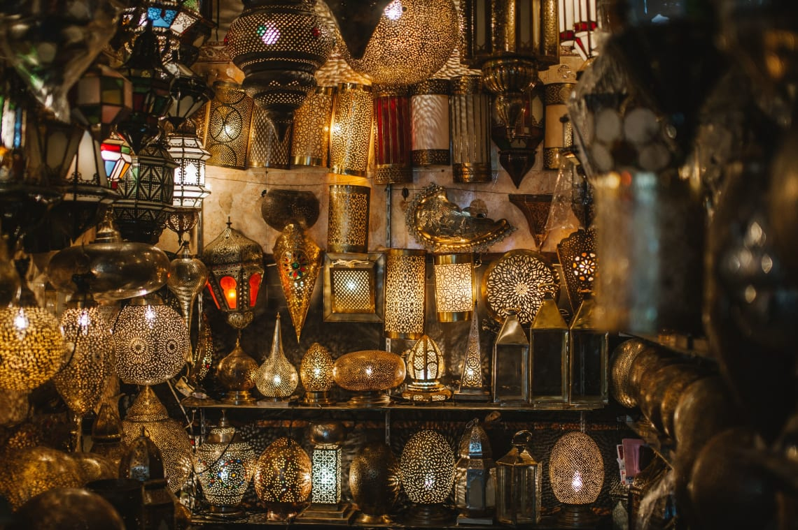
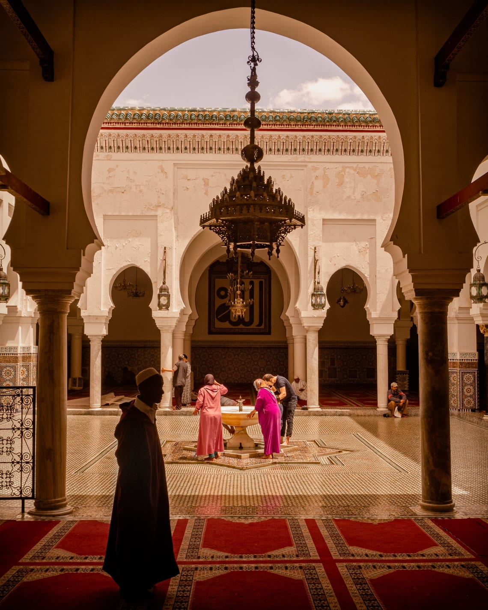
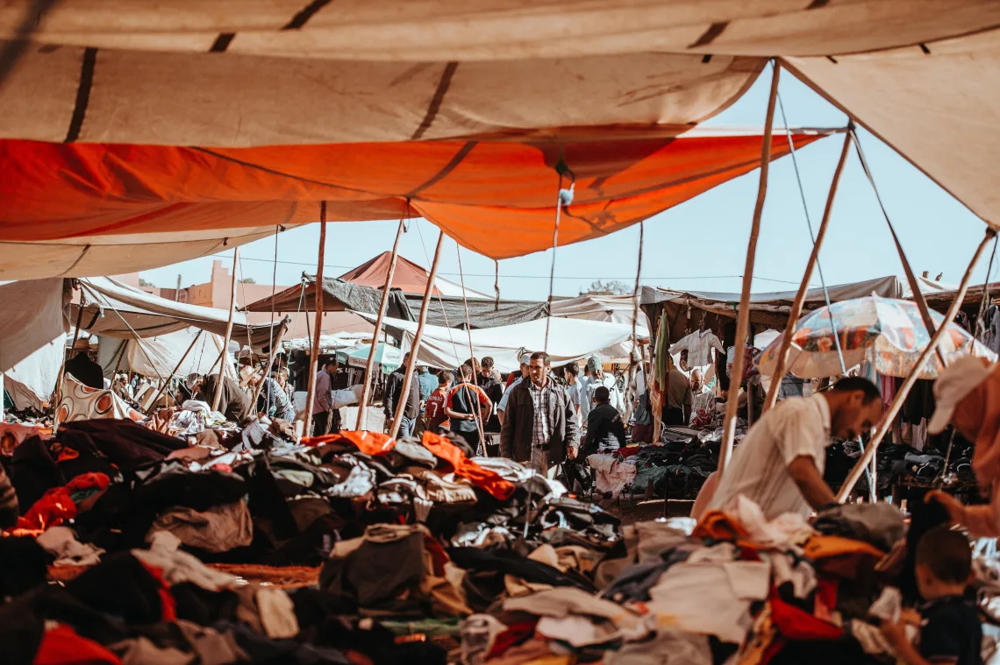
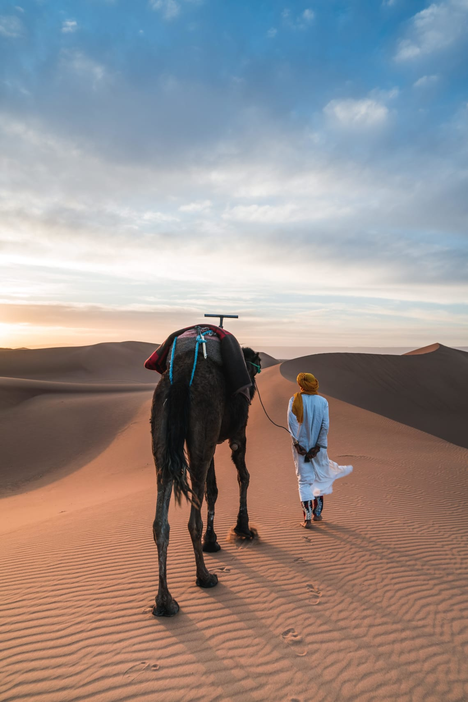
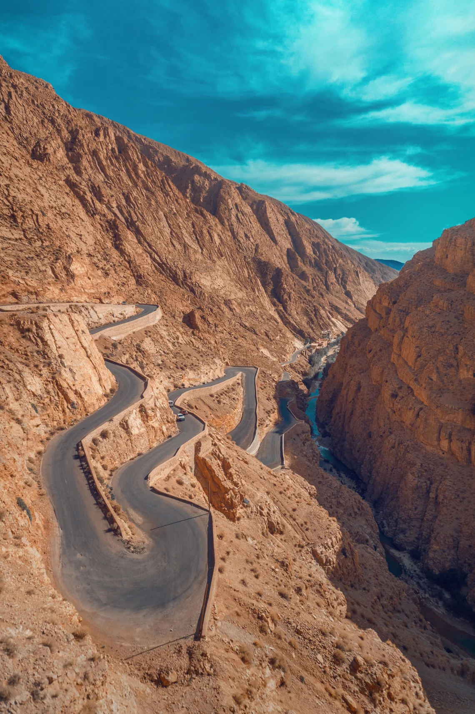
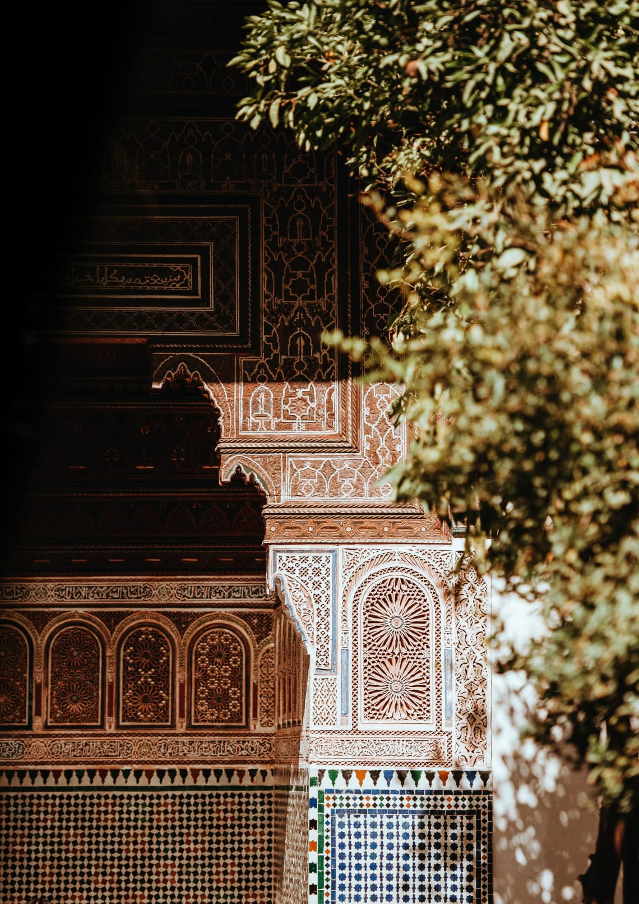
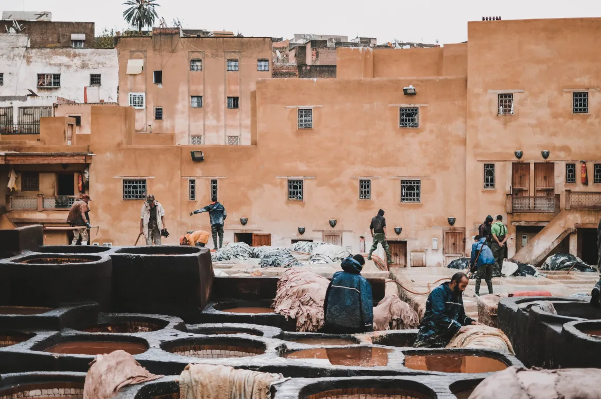
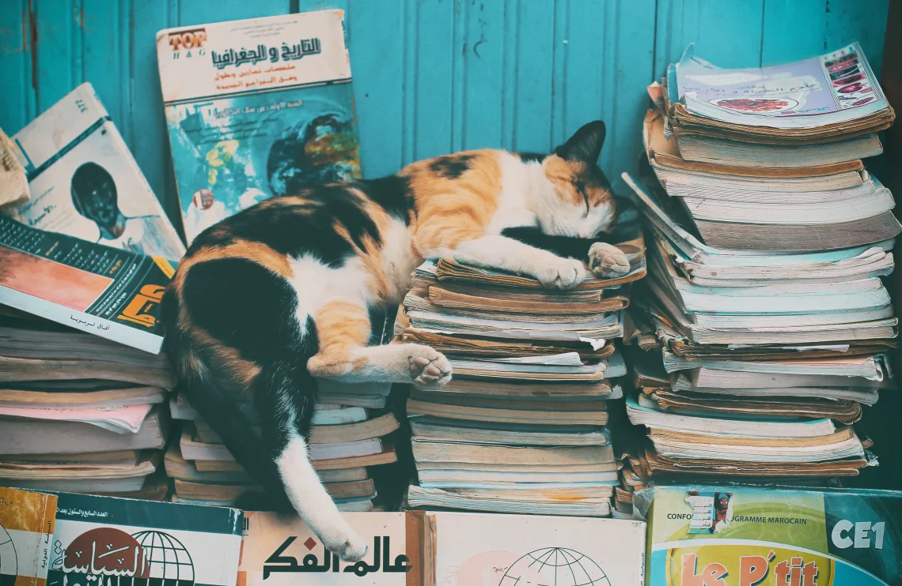
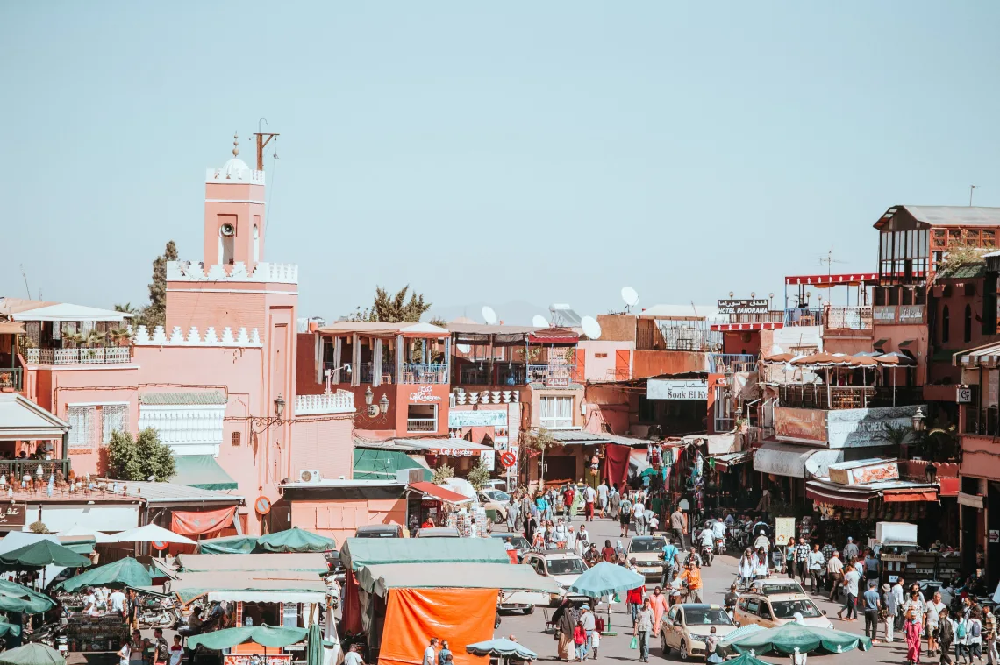
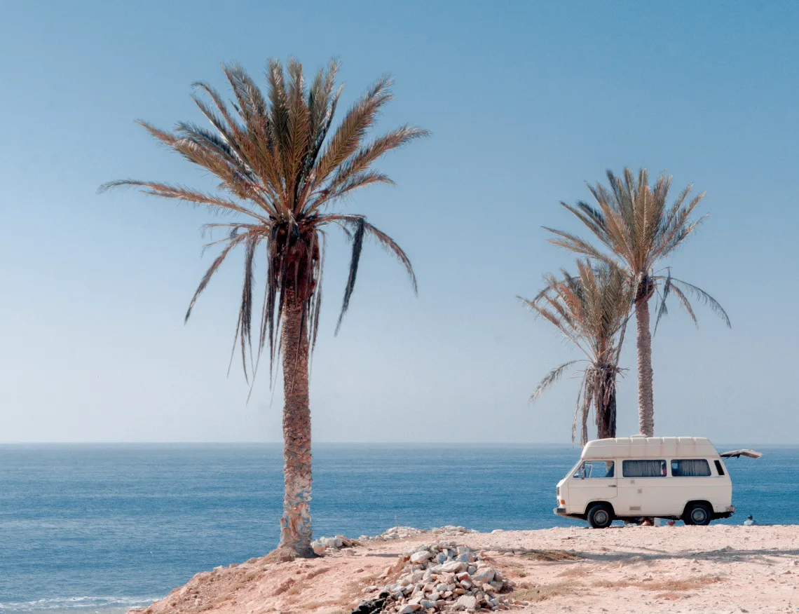

1. The delicious food

Located just below the Mediterranean Sea, the cuisine in Morocco has similar ingredients to that of countries like Italy, Spain or Greece. The best fruits in Morocco include peaches, cherries, oranges, dates, and figs, all of which are sweeter and juicier than anywhere else I've ever been.
You can also try an interesting cactus fruit, which tastes like a delicious mix of passionfruit and watermelon.
Morocco also has the most flavorful olives I've ever had, and the olive oil is so rich and abundant that you can have it with pretty much any dish. You can buy olives and fresh produce for super cheap from the street markets, which is always a fun experience.
Some traditional Moroccan dishes include couscous served with meat or roasted veggies, omelettes served with bread and olive oil, and fresh grilled sardines near the ocean. Tagines are also very popular. This is a delicious dish of slow roasted veggies, meats, and local spices typically served in a red clay pot.
The food is always super flavorful and colorful, usually using fresh spices like cumin, turmeric, and black pepper.
2. The mint tea

Drinking mint tea is a daily occurrence in Morocco. Fresh mint leaves are thrown into a silver teapot, sometimes with a few sugar cubes added, and steeped with hot water. The tea is then poured into small glass cups and drank with friends and family.
Often you'll be offered a glass of mint tea in a shop or when visiting someone, as drinking tea is a common custom of hospitality. Drink it as often as possible; it's some of the freshest tea I've ever had.
Sometimes it may seem too hot for tea in Morocco, but drinking warm beverages actually helps cool down the body temperature and quench thirst. So never turn down a tea, even on a hot day.
3. The shopping and souvenirs

Traditional Moroccan handicrafts are truly beautiful, and definitely worth getting as souvenirs to remember your Morocco trip. From the delicately painted ceramics, to the jeweled gowns and shoes, to the hand woven rugs from the mountains, you can find some unique and stunning goods in Morocco.
Try to visit the Souks, which are the traditional Moroccan markets that sell lots of local stuff, and they are usually roofed to block out the sun. You can always attempt to bargain for better prices than what the locals originally tell you, as you are usually charged a "tourist price" to start with. But be respectful when bargaining and sometimes just accept the price if the piece is handmade and impressive.
You can also buy some amazing natural presents in the organic health stores that you'll inevitably see everywhere. Teas, herbs, spices, soaps, oils, dried flowers, and other random things fill these stores, and the staff can teach you all about the secret healing and health benefits that these products provide.
Be sure to pick up some Moroccan Argan oil straight from the source, which does wonders for your skin and hair.
4. The ocean

Essaouira, Taghazout, Agadir, Safi, and Mirleft are a few popular coastal towns in Morocco that you can visit for surfing, swimming, and soaking in the sun. The coast is great at any time of the year; in the winter the surf is pumping and in the summer the cold Atlantic ocean feels amazing on the hot, sweaty skin.
Eat lots of seafood when on the coast, prepare yourself for the wind that barrels in from the ocean, and enjoy the relaxed vibes of the lazy surf towns. Locals tend to be very nice and chilled out here, so you'll witness some wonderful Moroccan hospitality here.
5. The insight into Islam

Islam is the main religion in Morocco, and the religious traditions reveal themselves in daily life.
Mosques, the places of worship for Muslims, can be found in every single town, from the magnificent ones of the higher towns to the simple, modest ones of the poorer towns. Mosque Hassan II in Casablanca is actually the largest Mosque in Africa, and the fifth largest in the world. Non-Muslims usually cannot enter Mosques, however, so if you aren't Muslim you'll have to admire the buildings from outside.
You'll hear the "call to prayer" five times a day. A sort of calling song in Arabic will play from the Mosque speakers, telling Muslims that it's time to pray.
You'll also notice the conservative way in which local women dress. They cover their body and hair, and sometimes their face. As a female traveler, try to embrace cultural differences by respecting their customs and covering up as well. You don't need to exactly copy their dress, just cover your shoulders, knees, and chest as much as you can.
Even at the beach, women are usually fully dressed. Just use your judgment when dressing, based on how much you want to stand out.
6. The affordability of everything

Morocco is a great country for backpacking or traveling on a budget. The cost of living is relatively cheap, and you can still indulge in some fun tours and activities without breaking the bank. The Worldpackers Morocco travel guide is a great resource for planning the ultimate budget trip to Morocco.
Even in nice restaurants, you can get a 3 course meal for 120 dirhams, or $12. An average tourist restaurant serves meals for about 50 dirhams ($5), and a cheap local restaurant will serve meals from 10-20 dirhams ($1 or $2). Produce from the street market will be even cheaper; you can get huge bags of fruits and veggies for 10 dirhams each ($1), and you can get loaves of bread for only a few cents each.
Hostels are also a great way to stay in Morocco for cheap. The average hostel price for a touristy city is about $7. The cheapest hostels are $5 to $6, and the more expensive hostels are $20, which is still cheaper than a hotel. You can also meet other cool travelers and make friends while traveling when staying in hostels, so these are amazing places to stay if you're traveling alone in Morocco.
You can also try and work in exchange for accommodation in Morocco, as lots of hostels, language schools, and surf camps in Morocco need help. This way you can get a richer cultural experience, and live for free.
Regardless of where you stay, you'll find life in Morocco to be quite cheap, especially compared to pricier countries like the USA, Australia, and places in Europe.
7. The Sahara Desert

The Sahara Desert is a stunning place in our world, and Morocco is a great starting point for venturing into the dunes. You can get three-day tours for around $150-$200, which usually include meals, luxury camping in the desert, and a fun camel trek. Do your research on which tour company you use, as there are so many good ones.
I do definitely recommend a tour when visiting the Sahara. You can rent a car or hitchhike, but it's just easier to have an experienced local guide lead you to the right spots. If you go it alone, by the time you pay for fuel, or public transport, and food and accommodation and your camel trek, you’ll probably spend the same amount as a tour anyway.
When visiting the Sahara, mentally and physically prepare yourself for the intense heat. Especially in the summer, temperatures can get up to 115 degrees Fahrenheit, or 45 degrees Celsius. It's a dry heat though, so the humidity isn't bad but the sun is scorching. Just bring sunglasses, sunscreen, a hat, and lightweight clothing.
Regardless of the heat, the Sahara is simply beautiful. Endless layers of soft golden sand dunes fill the horizon, and climbing up these massive dunes is surreal. The atmosphere is so quiet and peaceful, and watching the sunset or sunrise over the desert is unforgettable. You'll also witness amazing stars here, as there is barely any light pollution from civilization to cover them up.
8. The rugged mountain ranges

One of the reasons Morocco is a good place to visit is its varied geography! Morocco doesn't just have paradise beaches and sweeping expanses of desert, it also has mountains!
Morocco has two major mountain ranges, the Rif Mountains in the north and the Atlas Mountains stretching through the middle of the country. Driving through these mountains is always insane, with rugged cliffs, vibrant natural colors, and small hilltop villages. It's maybe not the best place to go if you get carsick though, as the winding roads and crazy Moroccan drivers make for a sort of rollercoaster in the mountains.
There are plenty of hiking and trekking opportunities in the mountains, which you can do with an organized tour or on your own. For the adventurous and fit travelers out there, try hiking Mount Toubkal, the highest mountain in Northern Africa.
The mountains are full of local villages,like Imlil in the Atlas Mountains and Chefchaouen in the Rif Moutnains, which are pleasant, serene places to stay. These towns are great starting points for hikes and treks.
You can also have the wonderful experience of visiting Berber Villages, or communities of the indigenous people of Northern Africa. Listen to their Berber language and learn about their way of life, as it's an enriching insight into the ancient cultures of Morocco.
9. The impressive architecture

Moroccan architecture is so intriguing that it's hard not to photograph every single street you walk down. Whether it's a luxury hotel, cheap hostel, trendy café, garden, government building, or random house, there is some sort of appealing architectural design on the building.
You'll often see smooth little tiles creating a pattern or image, modest and appealing colors painted onto surfaces, and arching doorways and passageways. The design in Morocco uses intricate decoration paired with stunning simplicity.
Lots of buildings are made out of red clay, especially in the mountains and desert, as the material is cheap and readily available. It’s a beautiful sight to see, and there are lots of work exchanges where you can help build these simple homes.
The Islamic religion also introduces lots of beauty into Morocco with its impressive mosques. Whether they are simple or magnificent, the architecture of the religious buildings add to the scenery of every town.
10. The sensory experience

If you're still wondering, "Why visit Morocco?", the sensory experience alone is a great reason to add Morocco to your bucket list.
Morocco is a true roller coaster to the senses. So many colors, scents, and sounds clutter your mind everywhere you go. This is more true for the cities and bigger towns, as you'll find more peace and isolation when you travel to more secluded areas of Morocco.
But in town, and especially in the Medinas (walled maze of streets often including courtyards and street markets) you may be overwhelmed by the constant chaos.
Giant mountains of colorful powdered dye, vibrantly patterned pots and donkeys carrying carts of watermelons will cross your line of vision.
At the same time, you'll hear locals yelling at each other in Arabic and maybe hear some catchy Moroccan music playing in the background.
You'll smell rich spices, sugary pastries, a tagine roasting on smoking charcoals, and the strong scent of leather from a local tannery.
Morocco is a very diverse and colorful country, and it's definitely never boring.
11. The constant presence of cats

If you like cats, Morocco is a great country for you.
Stray cats are everywhere, and you'll often see locals feeding them food scraps and stroking them like pets. They sometimes come around and beg when you have food out, but they usually are pretty chill. And some of them are so adorable, just try not to touch them if you don't have a way of washing your hands nearby because they might be pretty dirty.
12. The cities

If you like the hustle and bustle of cities, Moroccan cities will truly blow your mind. They are often crowded and chaotic, but you can still find peace in some of the quieter areas. And the cities combine all the elements I've listed, like food, architecture, religious culture, shopping and markets all into one space.
Visit Marrakech for a great introduction to Moroccan culture, as its the most popular city among tourists. Visit Fez for the richest culture and history in Morocco; this city has the oldest Medina in the country and the oldest university in the world.
Visit Chefchaouen to see the iconic blue city streets, and visit Taghazout to learn how to surf alongside exploring the city.
13. The work exchange opportunities in Morocco

The last of the reasons to travel to Morocco is the number of work exchanges in Morocco available through Worldpackers. Simply research opportunities through the website by searching "Morocco", and you won't believe the amount of work available!
You can stay in a hostel in Taghazout, a popular surf town on the southern coast of Morocco. Help the owner with social media marketing in exchange for learning how to surf in the perfect waves and, of course, getting free accommodation and meals.
You can also help teach English or French for an NGO in a town called Salé, and have a great impact on the children living in the area.
There are also plenty of work exchanges near the Sahara Desert. Help plant trees, fruits and vegetables in Tagounite, a little oasis town in the desert. Try a work exchange that allows you to learn Moroccan cooking, or promote local events. The opportunities are numerous, and all allow you to immerse yourself deeper in the Moroccan culture and save money while traveling.
There is a truly endless list of things to do in Morocco, and hopefully these aspects of the culture will convince you to head there on your next holiday!